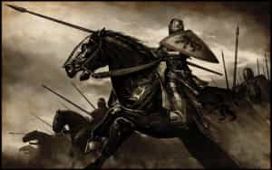

Davis was trained as a Historian at McMaster University, and as an Infantry soldier in the Canadian Forces. An author, strategist, Catholic medievalist, and an entrepreneur, his writing can be found at Stares at the World.


Know your enemy and know yourself, find naught in fear for 100 battles.
~Sun Tzu
On February 3rd, 2016, Roosh was forced to cancel the International RoK meetup, scheduled for February 6. The mainstream media had been reporting on this men’s only happy hour as a “rape legalization group” for days, stirring up social justice warriors, inciting violent groups in several cities, and even receiving public condemnation from mayors, governors, and legal organizations. The risk had become unacceptable; as Roosh said, “This isn’t our Alamo.” Even a single man fired from his job due to SJW or Antifa doxing is one man too many. Not for a meetup; not for this.
A tactical retreat was the only sane option; however our enemies revealed quite a bit about themselves in this process, and we learned a little something about ourselves as well. With that in mind, it is worth considering what lessons can be taken from all of this.
Our enemy shows traits of both extreme cunning, and mindless conformity. On the one hand, they react like pod people, holding out their arm and shrieking when they spot any crimethink. They become completely unreasonable in such a state, babbling logical contradictions within the same sentence, admitting something is false and then immediately affirming its truth, demanding that law enforcement throw any and all civil liberties by the wayside, and working themselves into emotional hysterics.
On the other hand, they display extreme cunning. During Gamgergate it was revealed that the gaming press were coordinating behind the scenes, deciding which topics would be discussed and promoted, and which ones would be censored and dropped into the memory hole. Given that on February 2nd six nearly identical articles were published throughout the Australian press within hours of one another, all describing Return of Kings as a “Rape Group,” it is a near certainty that the Australian press is similarly controlled by collusion between the reporters on secret message boards. (It turns out that one company, Fairfax Media, controls nearly the entire press in the country.)
Asking if this was coincidence or enemy action misses the point.
To coordinate to this degree demands sober intelligence, and yet misconstruing and overreacting to a satirical article precludes such intelligence. Trying to separate our opponents into two groups – the manipulators and the proles – is similarly inadequate. There is too much consistency. Both the upper and lower echelons share the same criteria for what is considered a threat.
Most human beings subsume their emotional intelligence beneath their reasoning; when encountering another person they prioritize the spoken word over body language, and it takes effort to “listen to one’s gut” and spot the liars in our midst. This is why dogs can often be a good judge of character; an animal isn’t distracted by logic, it will immediately pick up on hidden, hostile motives instead of the advertising spiel.
Narcissists are the reverse. They will frequently contradict themselves, even denying outright facts that are presented to them, while simultaneously manipulating people with incredible precision. Where the healthy human slaves their animal brain to the frontal lobe, the narcissist is a beast who’s able to utilize the higher functions to serve the lower; being “triggered” is an open admission that the lizard is in control.
The behaviour we’ve witnessed over the past week is perfectly explained by flocks of narcissists, organized online, exercising vicious cunning with a human’s capacity for abstract thought. They are the metaphorical lizard people, dressed in skin suits, unreasonable and unrepentant. Those of us on the front lines have seen their true faces a hundred times before; after this past week, their nature has been revealed to all who had eyes to see.
Their goal is pandemonium. So long as it is chaotic, degraded, cheap, infectious, and ugly, they will endorse it, and they will use any tactic to achieve it: violence, lies, false philosophies, and pretend victimhood. They will be crying and vulnerable one moment, and coldly murderous the next. They are vicious, they are legion, and they’re organized as only animals who have known sin could possibly be.
We see you.
Through organizing and battling against their propaganda over the past week, we have been forced to address questions about ourselves. What are our motives? What do we hope to achieve? What is the end-state that we seek after beyond immediate material and ego satisfaction? We are men who believe in the cardinal virtues of justice, wisdom, courage, and temperance, and we pursue patriarchy, lawfulness, and freedom. We accept the responsibilities of masculinity; we accept the necessity of law and order; and we accept the bracing cold wind of working without a net.
That and $2 will buy you a cup of coffee.
Patriarchy, lawfulness, and freedom are respectively the products of charity, love, and hope; the theological virtues. Man on his own is incapable of achieving these for one simple reason: people respond to incentives – even us.
What were the upsides of this meetup? Making new friends, networking with men who work in other industries, and starting the process of building a community, something sorely lacking in this atomized age. The only substantive difference between this and a MeetUp.com hiking group would have been a greater degree of philosophical coherence and commitment (and even then – the sort of people who will leave their homes to go hiking are the sort who agree with us on most topics already).
What were the downsides? Assault, doxing, online smear campaigns, trumped up charges leading to arrest, and even death at the hands of on unstable lunatic. As great as the happy hour would have been, it wasn’t worth the potential cost.
This is only sensible, and yet it’s this sensibility that becomes our greatest weakness. Cancelling the happy hour was nothing more than a tactical retreat in the face of overwhelming odds, but it brings us to an important question: when is it ever worth the price? Why spend the time seeking out virtuous men instead of scheming against rich men in your own field? Why bother denouncing feminism, when approving of it will yield casual sex? Why bother searching for a woman worth marrying – passing up many guaranteed opportunities for short-term pleasure along the way – for something so uncertain, and so difficult to maintain?
“Self improvement is masturbation,” says Tyler Durden, as he points towards the cardinal virtues and the honors they’ll win us in this world; but what good is the world if you forfeit your own soul? “Now self destruction…”
Truth, beauty, and spirituality; these are goals worthy of self abnegation.
What we’re fighting for doesn’t make sense when we could satisfy our need for struggle through video games. Demanding freedom doesn’t make sense when we could sit around on the government dole. Seeking out the difficult responsibilities of patriarchy doesn’t make sense when the cows are giving away the milk for free – unless if there is some higher calling that we’re all responding to.
We can’t achieve any of these things as individuals; every interaction we engage in, every moment of every day, incentivizes against the loyalty and community we so desperately need to become our best possible selves. This spiritual yearning for both freedom and responsibility is what unites us, and pushes us beyond the merely rational; this world of endless Prisoners’ Dilemma games weighted in such a way to favour defection because at least that’s predictable.
How do we do it without exposing ourselves to their attacks? That is the question we need to be asking ourselves. Through introspection we will hear the voice of our conductor, and learn what song it is that we are meant to sing.

By attempting to set up this meetup, we effectively sent out a small expeditionary force—only to discover an entire division hiding behind the next ridge. They responded to our reconnaissance team with salvos of artillery, displaying their bellicosity for all to see, allowing us to realize the breadth and depth of the forces arrayed against us. They failed to annihilate us, and they gave away their position; meanwhile our position will be strengthened as more men flock to our cause, first out of curiosity, and then out of righteous outrage.
The time for debating our opponents is over. We are going to replace them. We are going to win.
A final word for all of those who attacked us, slandered us, and threatened us; we, the men who would defend you against those who would enslave and exploit you; we who fight, not for ourselves, but for the future. We will remember who you are, and we are a larger chorus than you know.
That ex-boyfriend who stole your heart? One of us. That charming married man at your office, with the beautiful wife? One of us. That wise mentor who helped you more than you’ll than you’ll ever know? One of us. And we saw what you said about us, without even knowing who we were.
The battle for civilization will be neither quick nor easy. We will win, but not without great struggle and many casualties amongst those who refused to pick a side. So remember something: when you or your womenfolk are being viciously assaulted and raped by third world savages whom you defended while decrying us—or by some gestapo thug, whom you empowered to oppress us, their breath rancid with garlic and rotting teeth—
That is the future you chose by standing against men of virtue.
Whatever town or village you enter, look for a worthy person in it and stay there until you leave. As you enter a house, wish it peace. If the house is worthy, let your peace come upon it; if not, let your peace return to you. Whoever will not receive you or listen to your words – go outside that house or town and shake the dust from your feet. Amen, I say to you, it will be more tolerable for the land of Sodom and Gomorrah at the day of judgment than for that town.
Mathew 10:10-10:15
Read More: How We Can Use Sun Tzu’s Strategies To Implement Neomasculine Principles